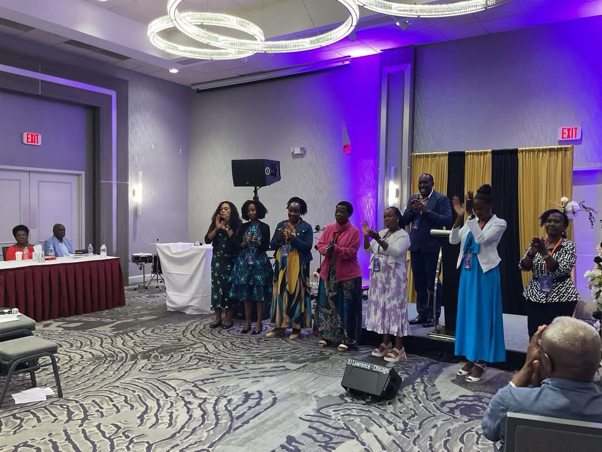
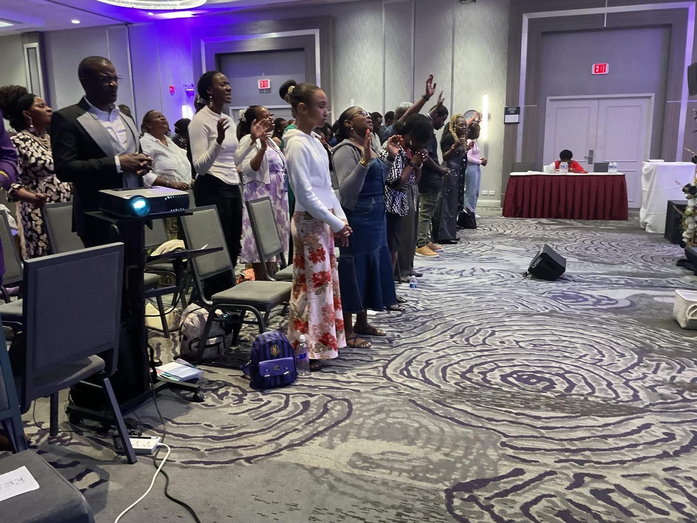

Church Ministry
Helping members learn more about God, worship meaningfully, and grow closer to Him through spiritual growth and discipleship. We create a welcoming space for everyone to encounter God's presence through prayer, teaching, and fellowship.

Evangelism Outreach
Sharing the message and teachings of Jesus Christ with intention and purpose, bringing people to experience His love and grace. We go into communities, neighborhoods, and digital spaces to reach those who have not yet heard the Good News.

Hospital Ministry
Providing spiritual support, prayer, and companionship to those who are hospitalized, in nursing homes, or homebound. We believe no one should face suffering alone, and we bring the comfort of Christ to those in their most vulnerable moments.

Prisons & Orphanages
Serving incarcerated individuals and their families while extending love and care to children in need of hope and belonging. We believe in the power of redemption and that every life has value in the eyes of God.